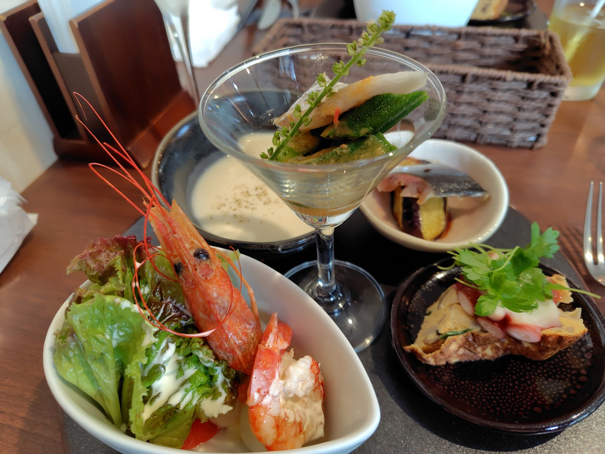
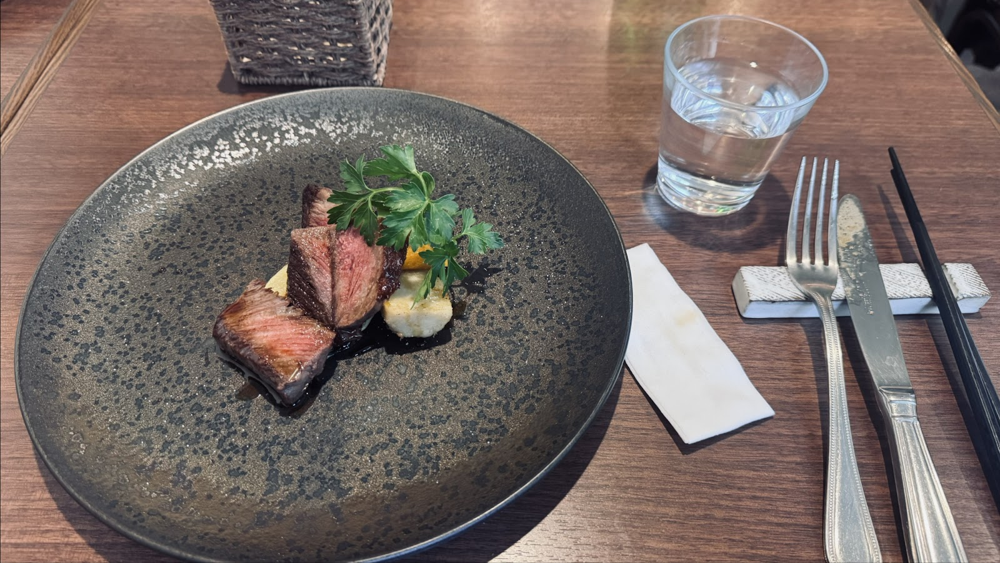
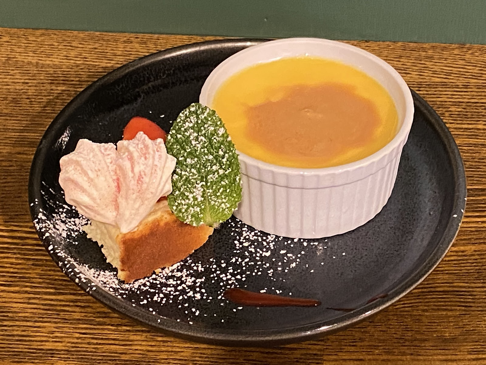

Reasons
選ばれる理由
01
カウンター席で、お一人でも
カウンター席があるので、女性のお一人様でも気負わずにご来店いただけます。
02
季節を感じるコース
季節の野菜を活かしたコースに、自家製パンと自家製デザートを添えて。旬の一皿をお楽しみいただけます。
03
料理に寄り添う一杯
ワイン・日本酒・焼酎など、お料理に合わせた一杯を店主が提案いたします。
04
細やかな心配り
苦手な食材の事前確認やお箸のご用意など、お客様お一人おひとりに合わせた心配りを大切にしています。
Dishes
お料理ダイジェスト
彩り豊かな前菜、丁寧に仕上げたメイン、自家製デザートまで、季節ごとの表情をご覧ください。

彩り豊かな前菜の盛り合わせ

丁寧に火入れしたメイン料理

自家製デザートの盛り合わせ
Reviews
★4.6（クチコミ82件）
Googleクチコミにて、多くのお客様からの評価をいただいております。実際にお寄せいただいた声は、お客様の声ページにて原文のまま公開しています。
Access
アクセス
〒277-0005 千葉県柏市旭町1丁目3-20 ハイツ松原101
柏市役所へ向かう途中にございます。
TEL：04-7189-7220
営業時間・定休日は変更となる場合がございます。最新情報はInstagram（@hironoya_ryoriten）にてご確認いただくか、お電話にてお問い合わせください。